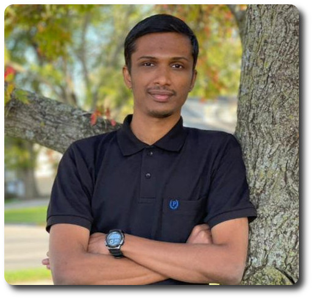
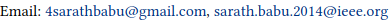

I am a Research Scholar at Indian Institute of Space Science and Technology (IIST), with specialization in Delay Tolerant Networks. However, from the perspective of learning, I restrict myself to zilch. I conceive each moment in life as an experience to fine-tune my perceptions of the world.
*“An alternative interpretation might prove to be closer to the truth
than the first interpretation. - Dorothy Rowe
--
Systems and Networks Lab
L202/D3, Avionics Block
Indian Institute of Space Science and Technology
Thiruvananthapuram, India - 695547
